Green Chile Chicken Casserole
Ingredients
- 4 skinless, boneless chicken breast halves
- garlic salt to taste
- 18 (6 inch) corn tortillas, torn in half
- 1 (28 ounce) can green chile enchilada sauce
- 1 (16 ounce) package shredded Monterey Jack cheese
- 1 (8 ounce) container reduced fat sour cream
Directions
- Preheat the oven to 350 degrees F (175 degrees C). Lightly grease a medium baking dish.

- Season chicken with garlic salt; arrange in the prepared baking dish. Bake in the preheated oven until no longer pink and juices run clear, about 45 minutes. An instant-read thermometer inserted into the center should read at least 165 degrees F (74 degrees C).
 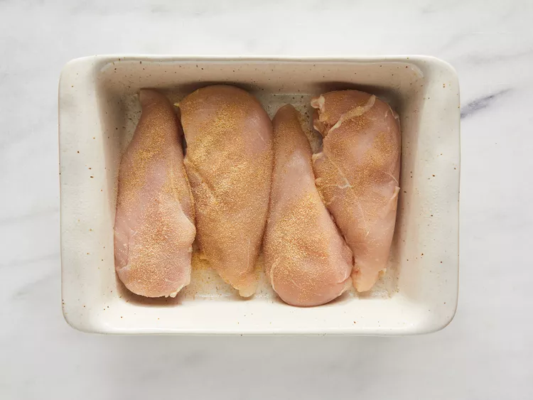
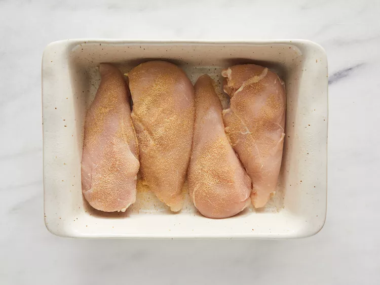

- Cool, shred, and set aside.
 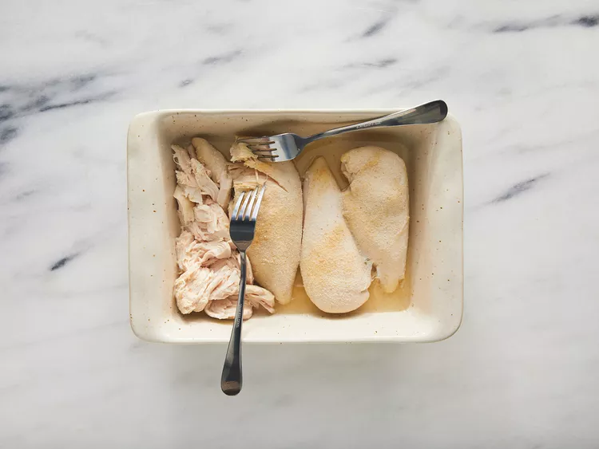
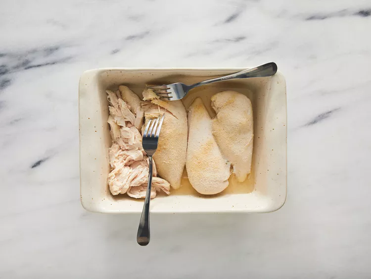

- Meanwhile, char each tortilla half over the open flame of a gas stove burner using metal tongs until lightly puffed, about 1 minute.
 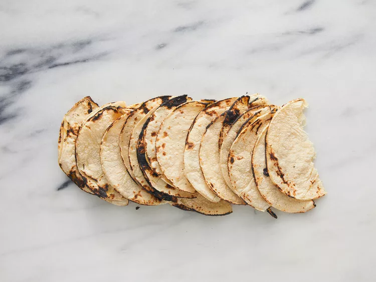
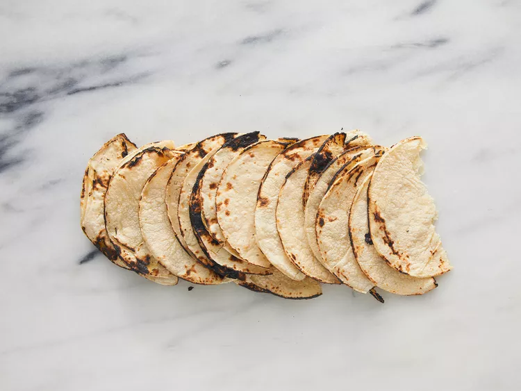

- Pour about 1/2 inch enchilada sauce into the bottom of a medium baking dish; arrange 6 tortillas in a single layer on top.
 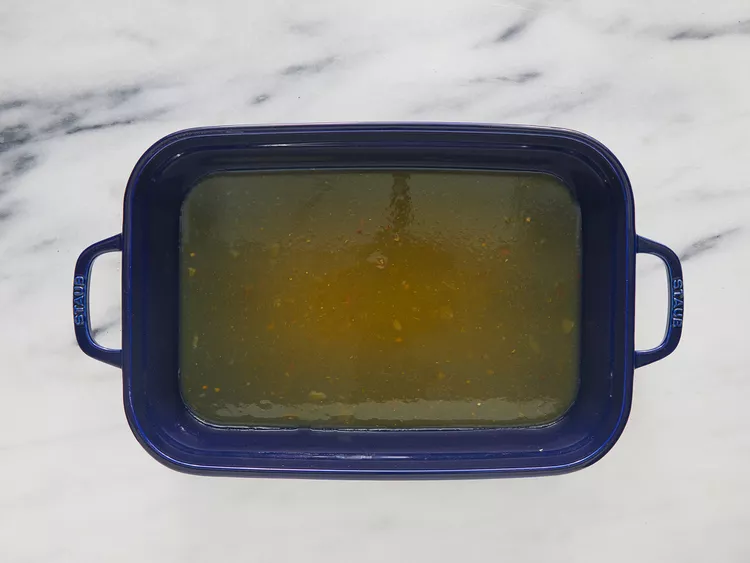
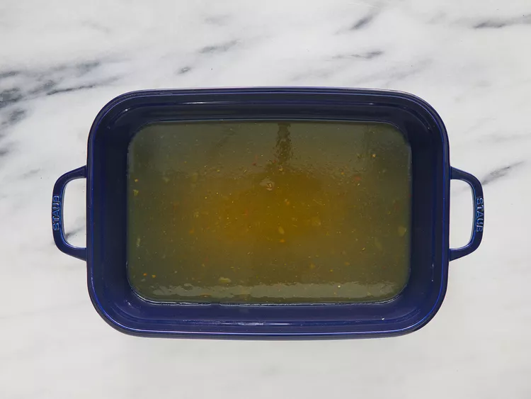
 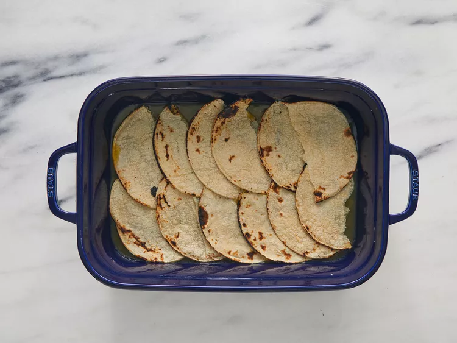
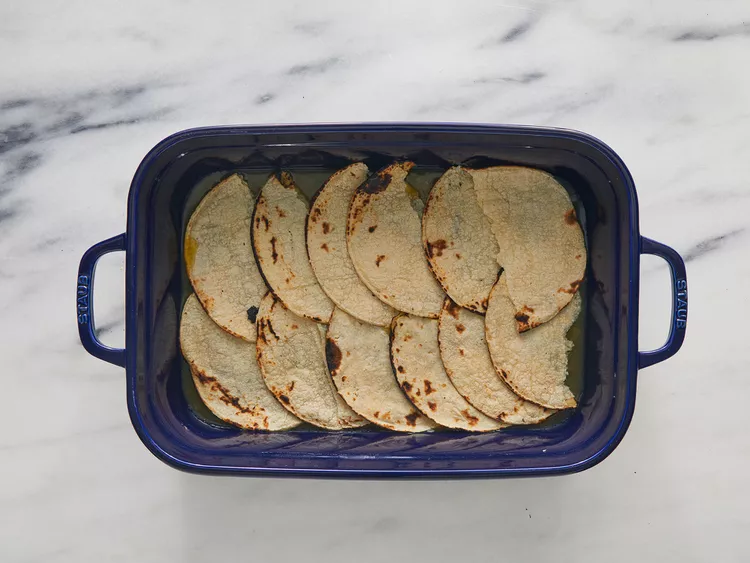

- Sprinkle with 1/2 of the chicken, 1/3 of the cheese, 1/2 of the sour cream, and 1/3 of the remaining enchilada sauce.
 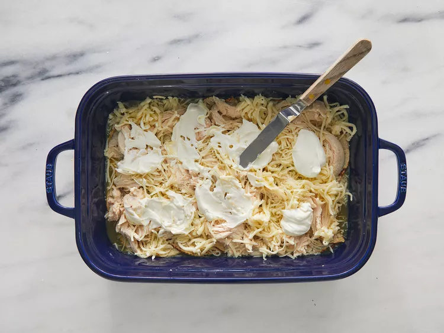
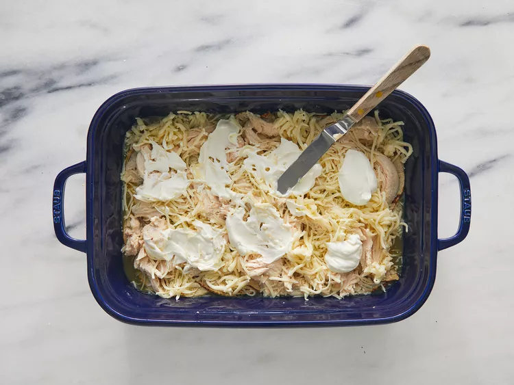

- Repeat layers. Coat remaining tortillas thoroughly with some of the remaining enchilada sauce and arrange on top. Sprinkle with remaining cheese and top with any remaining enchilada sauce.
 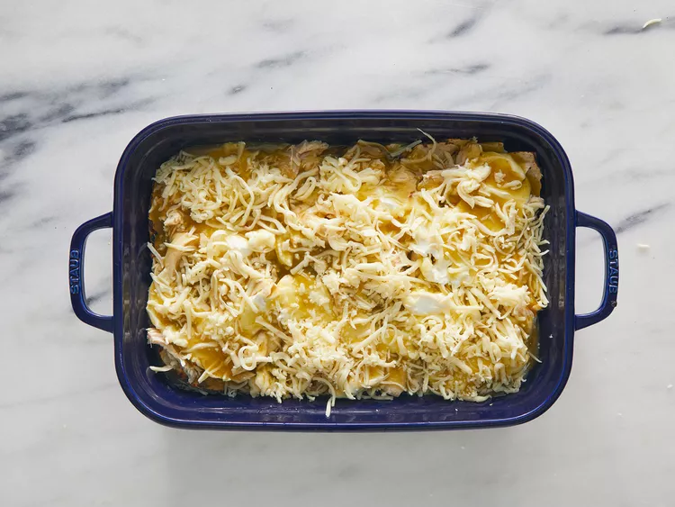
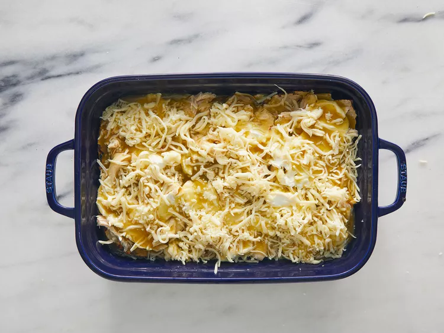

- Cover and bake in the preheated oven for 45 minutes. Cool slightly before serving.